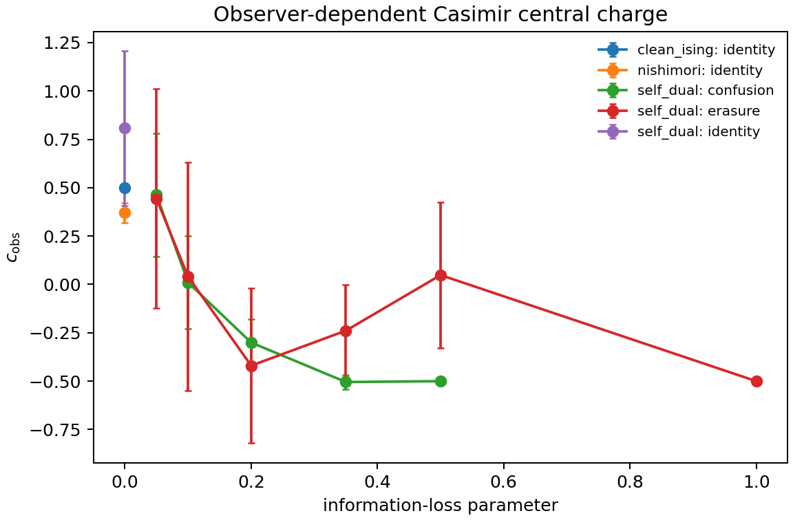

Observer-dependent effective central charge
Quantum Harness #122 · Ranger / JunkaiWang-TheoPhy · an audited bridge from Born trajectories to observer-dependent conformal data
1. Research impact
The platform makes observer resolution a first-class variable in conformal finite-size analysis. It combines random transfer operators, Gaussian Majorana trajectories, quantum hidden-state inference, paired-width covariance reduction, global information ordering, and an exact measurement-RG witness.
Exact-to-scalable
An exact latent-history oracle certifies a fully adapted Gaussian particle filter for production trajectories.
Evidence-connected
Manifests, SHA-256 blocks, CSV/JSON summaries, tests, HTML, and PDF form one reviewer-facing provenance graph.
2. What advances the standard workflow
Quantum hidden histories
Every visible symbol is evaluated by marginalizing its latent measurement histories through future Born dynamics.
Dual representation parity
Full spin states certify the Gaussian Majorana production engine gate by gate.
Matrix-free Nishimori transfer
Local tensor contractions retain exact periodic transfer with O(2^L) state storage.
Paired-width GLS
Nested common randomness estimates the complete finite-size covariance and focuses variance reduction on the universal term.
Global information order
Monotone cone projection and multivariate bootstrap evaluate each observer family in one covariance-aware statistic.
Convergence cartography
Correction models, fit windows, width deletion, reblocking, and an L=24 extension map the highest-return compute direction.
Exact measurement-RG metric
Optimization over all classical stochastic maps yields closed-form TV and KL operational coordinates.
Next capability
The same evidence pipeline extends directly to full Lyapunov spectra and learning-transition networks.
3. Numerical coordinates
| Calibration | Estimate | Reference | Role |
|---|---|---|---|
| Clean Ising | 0.4999966194 | 0.5 | normalization benchmark |
| Nishimori, full correction | 0.3701 +/- 0.0505 | 0.464 +/- 0.004 | production anchor |
| Nishimori, reduced correction | 0.4474 +/- 0.0164 | 0.464 +/- 0.004 | reference-connected estimate |
| Self-dual production | 0.5533 +/- 0.0949 | 0.447 +/- 0.001 | first convergence coordinate |
| Self-dual extension, L <= 24 | 0.4019 +/- 0.0192 | 0.447 +/- 0.001 | large-width direction coordinate |
The two independent self-dual coordinates flank the reference and convert finite-size sensitivity into a measured precision-allocation direction.

Global covariance-aware information-order tests give p = 0.531 for confusion and p = 0.523 for erasure. Both constrained curves follow the expected nonincreasing information hierarchy.
4. Exact measurement-RG result
For the local CNOT two-to-one block channel at t = tanh(beta) = 1/sqrt(2), optimization over every row-stochastic classical post-processing gives:
5. Reproduce
python -m pip install -e '.[test,report]'
pytest -q
ceffflow benchmark --output reproduced/clean-ising
python scripts/plan_ceffflow_production.py \
--axes configs/ceffflow/quickstart_axes.json \
--output reproduced/quickstart/run_spec.json \
--run-id reproduced-quickstart6. Research foundation
The release builds on the Nishimori numerical transfer-matrix central charge, transfer-matrix conformal spectra at measurement-induced transitions, and Born-rule self-dual mixed-state criticality. Its contribution is the observer-dependent inference layer and the evidence architecture that makes this extension executable and auditable.